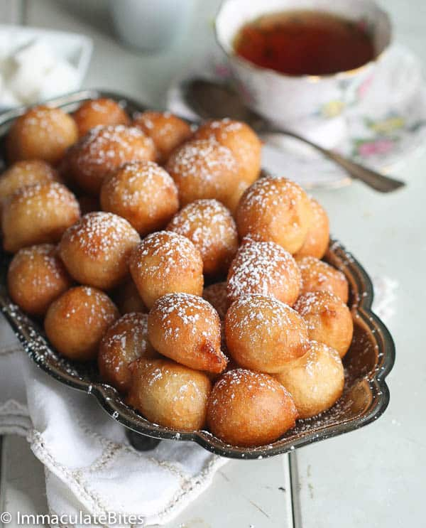

Puff puff Recipe

How to prepare puff puff
Most West African countries are familiar with the popular street food Puff- Puff, which is known by different names depending on the country. Ghanaians call it Bofrot (togbei), Cameroonians and Nigerians call it Puff-Puff (Puff) or beignet in French. The basic ingredient consist of: flour, sugar, yeast, water, salt and oil for deep frying.
It is an easy and quick recipe to make with different variations. This recipe is the one I have been making for years and the one that takes me back to my hometown. It brings back memories of late night snacking on the street.
Ingredients
- Flour
- Yeast
- Warm water
- Salt
- Sugar
Steps
- Activate the yeast: Mix salt, water, sugar, and yeast. Set it aside for 5 minutes
- Make the dough: Add flour and mix
- Rest and Rise: Let the mixture rise for approximately 1-2 hours
- Pre-heat the oil: In a large sauce pan, pour vegetable oil into a pot until it’s about 3 inches (or 5 centimeters ) high (too little will result into a flatter balls), and place in low heat
- Check the heat: Test to make sure the oil is hot enough by putting a drop of batter into the oil. If the oil is not hot enough, the batter will stay at the bottom instead of rising to the top.
- Fry the puff puff:
Hand Method: Using your hands, grab a little bit of mixture at a time and drop into the oil.
Spoon Method: When the oil is hot enough, use a spoon to dish up the batter and another spoon or spatula to drop it in the oil. Sort of in the shape of a ball.
- Check the doneness: Fry for a few minutes until the bottom side is golden brown.
- Flip the puff puff: Turn the ball over for a few minutes until the underside is golden brown.
- Remove from oil: Use a large spoon or a slotted spoon to take it out of the oil. I usually place them on napkins right away to soak up some of the excess oil.
- Coat the puff puff: If desired, you can roll up the finished products in table sugar or powdered sugar to make it sweeter.